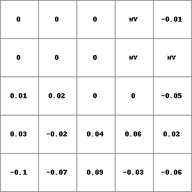
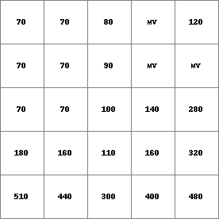

plancurv
Planform curvature calculation using a DEM
Result = plancurv(dem)
--unittrue or --unitcell (see also notes)
Calculates the planform curvature (i.e. the curvature transverse to the slope) on the elevation map dem. For each cell, the curvature is calculated in a 3 x 3 cell window, where the cell under consideration is in the center of the window.
The planform curvature on Result is the change in slope per distance in horizontal direction, in direction of the slope. It is negative at concave slopes and positive at convex slopes. The slope is dZ/dX, which is the increase in height (vertical direction dZ) per distance in horizontal direction (dX). The planform curvature is the change in slope per distance in horizontal direction, so it is dZ/dX 2. For a correct calculation of the planform curvature, the scale for the horizontal distance on dem and the vertical distance (height) on dem must be the same and the global option --unittrue must be set (it is default). In that case, the scales of Z and X correspond and the planform curvature on Result is in 1/dX.
The planform curvature is calculated according to the equation given by Zevenbergen.
If a cell has a missing value on dem, a missing value is assigned to Result, in any case.
For each cell, the planform curvature is calculated using its 8 neighbours in a 3 x 3 cells window. Elevation in all these cells must be known, else the planform curvature calculation can not be performed. It may occur that one of these values is unknown: this is the case if a surrounding cell is a missing value or if the centre cell is at the edge of the map resulting in the absence of some surrounding cells. If this occurs the plancurv operator uses a built in neighbourhood interpolator to fill these missing values or absent cells in; this will make calculation of the planform curvature for the centre cell still possible. For each missing value cell or absent cell, the elevation is determined by taking the average elevation of non missing value cells in a 3 x 3 cell window, with the missing value cell or absent cell in the centre of the window.
This operation belongs to the group of Derivatives of elevation maps
| Result.map | Dem.map |
|  |  |